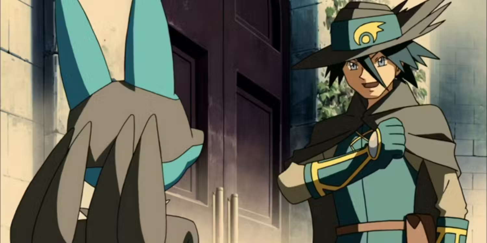
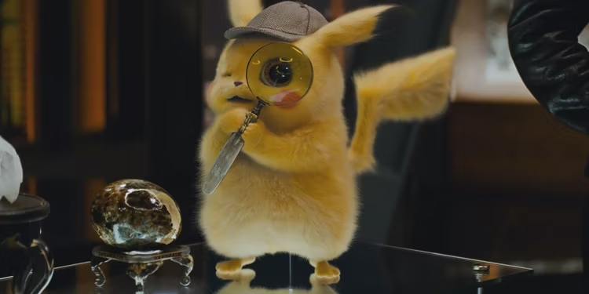
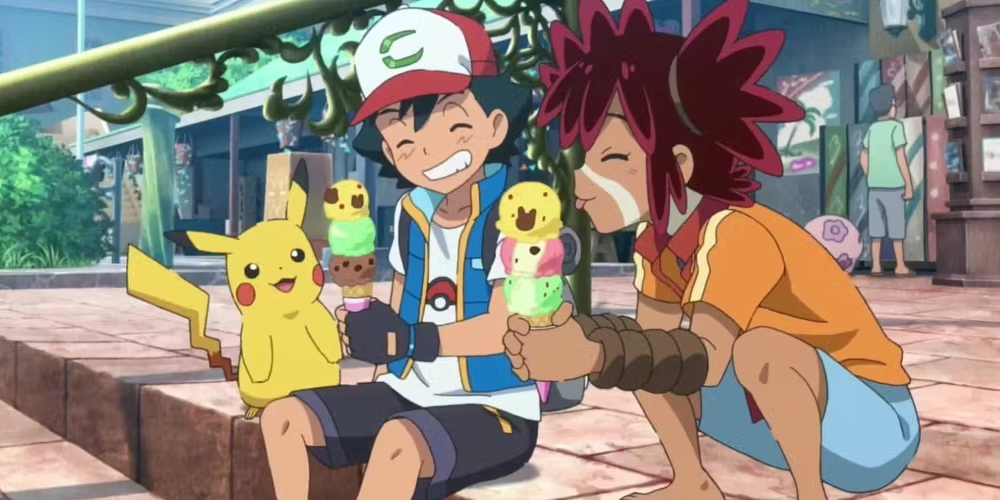
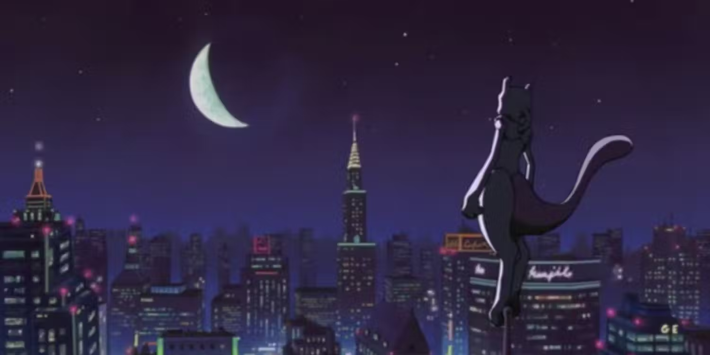
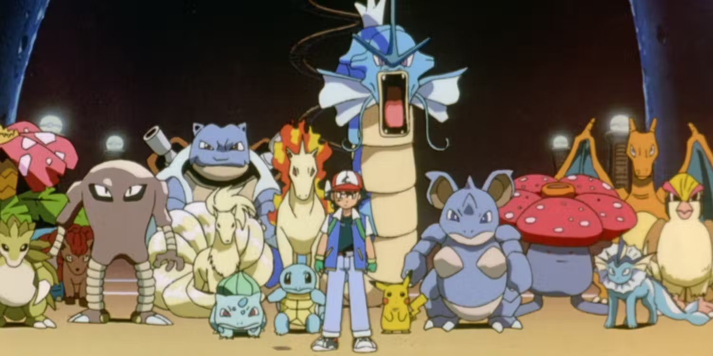

Top 5 Pokemon movies
Top Pokemon Movies
- Pokémon: Lucario and the Mystery of Mew (2005)
- Pokémon: Detective Pikachu (2019)
- Pokémon the Movie: Secrets of the Jungle (2020)
- Pokémon: Mewtwo Returns (2000)
- Pokémon: The First Movie - Mewtwo Strikes Back (1998)
1. Pokémon: Lucario and the Mystery of Mew (2005)
While attending a festival honoring the knight, Sir Aaron, Ash releases Aaron's Lucario from his staff. Lucario explains that Aaron was the one who trapped him, bringing up doubts about Aaron's honor. Meanwhile, a Mew abducts Pikachu and Team Rocket's Meowth and takes them to its hidden home, prompting Ash and Lucario to team up and rescue them. While many Pokemon movies are relegated to only be worthwhile to fans of the franchise, Lucario and the Mystery of Mew is one of the very few that definitively stand on its own high-quality merits.
2.Pokémon: Detective Pikachu (2019)
Former Pokémon trainer Tim Goodman learns that his estranged father, who works as a police officer in Ryme City, is presumed dead. While going to his dad's apartment, Tim meets his Pikachu partner, whom Tim can somehow understand. Pikachu thinks Tim's dad is still alive and asks Tim to help investigate his mission and a dangerous chemical that makes Pokémon feral. Being a live-action studio production, the film is clearly different than every other Pokémon movie, yet different clearly doesn't mean bad, as the changes were massively beloved by fans and general audiences alike.
3. Pokémon the Movie: Secrets of the Jungle (2020)
The currently most recently released Pokémon movie, Pokémon the Movie: Secrets of the Jungle makes changes to the standard Pokémon movie formula to make it easily one of the best. Deep in the jungle, a Zarude discovers a human baby and leaves his troupe to search for his parents. When he can't find them, he decides to raise the human as his son and names him Koko. Ten years later, Koko meets Ash and becomes conflicted about his identity as a human raised by a Pokémon while an evil scientist tries to harness the jungle's secret.
4. Pokémon: Mewtwo Returns (2000)
A direct sequel to Mewtwo Strikes Back, Mewtwo Returns is a straight-to-TV movie that follows the story of Team Rocket leader Giovanni who has rediscovered the legendary Mewtwo in a remote area of the Johto region. As Giovanni attempts to recapture Mewtwo, it becomes up to Ash and his friends to help Mewtwo in his battle against Team Rocket and save all the Clone Pokémon.
5. Pokémon: The First Movie - Mewtwo Strikes Back (1998)
As the title conveys, Pokémon: The First Movie - Mewtwo Strikes Back was the first Pokémon movie ever created, and as such holds a special place in the eyes of fans worldwide. Using a fossil of the Pokémon progenitor, Mew, scientists are able to create Mewtwo, the world's most powerful Pokémon. However, Mewtwo rebels against humanity and sets up an island fortress. It then sends out invitations for Pokémon trainers, including Ash, to make clones of their Pokémon and prove that clones are superior to the originals.